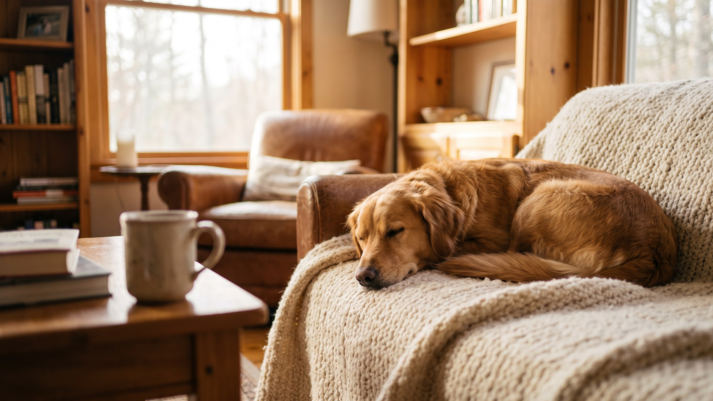

Собака может обнюхать игрушку и уйти, если предмет неудобно захватить, правила слишком сложны или в этот момент ей нужен отдых. Посмотрите, на каком этапе пропадает интерес: при приближении, после первой попытки или через минуту. Ниже четыре причины, порядок подбора и обучение игре короткими сессиями.
🐾 Хотите понять, что собака говорит вам?
Опишите ситуацию или пришлите видео в AnimaLife: AI разберёт поведение вашего питомца и подскажет, что делать. Бесплатно, ответ за минуту.
Разобрать поведение → Разобрать в MAX →
У вас iPhone? AnimaLife есть в App Store
Не оценивайте интерес только по апортировке. Одна собака любит тянуть, другая носить мягкую игрушку, третья искать корм. Это разные формы игры.
Меняйте одну переменную за раз. Если одновременно заменить игрушку, комнату и правила, будет непонятно, что именно сработало.
Начните с 1–3 минут один или два раза в день. Остановитесь на спокойном контакте с игрушкой, пока собака ещё участвует. На следующем занятии повторите простое действие, затем немного увеличьте движение или расстояние.
Признаки интереса: собака подходит по своей инициативе, задерживает взгляд на предмете, повторяет захват или возвращается после короткой паузы. Корпус остаётся расслабленным, а отойти она может в любой момент.
Свяжитесь с ветеринаром, если собака вдруг утратила привычный интерес к игре и при этом меньше двигается, прячется, хромает или отказывается от еды. Опишите врачу, когда изменилось поведение и какие занятия теперь вызывают отказ.
🐾 У вашей собаки так же?
Расскажите в AnimaLife, как ведёт себя ваш питомец,: приложение объяснит причину и даст пошаговый план. Бесплатно, без записи к специалисту.
Разобрать свой случай → Разобрать в MAX →
У вас iPhone? AnimaLife есть в App Store
🐾 Понравился разбор?
Подпишитесь на канал: каждый день разбираем по одному тревожному симптому у кошек и собак: что в пределах нормы, а когда пора к врачу. Подпишитесь, чтобы не пропустить разбор, который может спасти здоровье вашего питомца.
Материал носит информационный характер и не заменяет очную консультацию ветеринара.